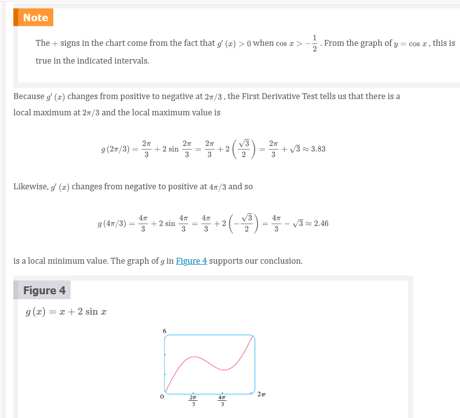
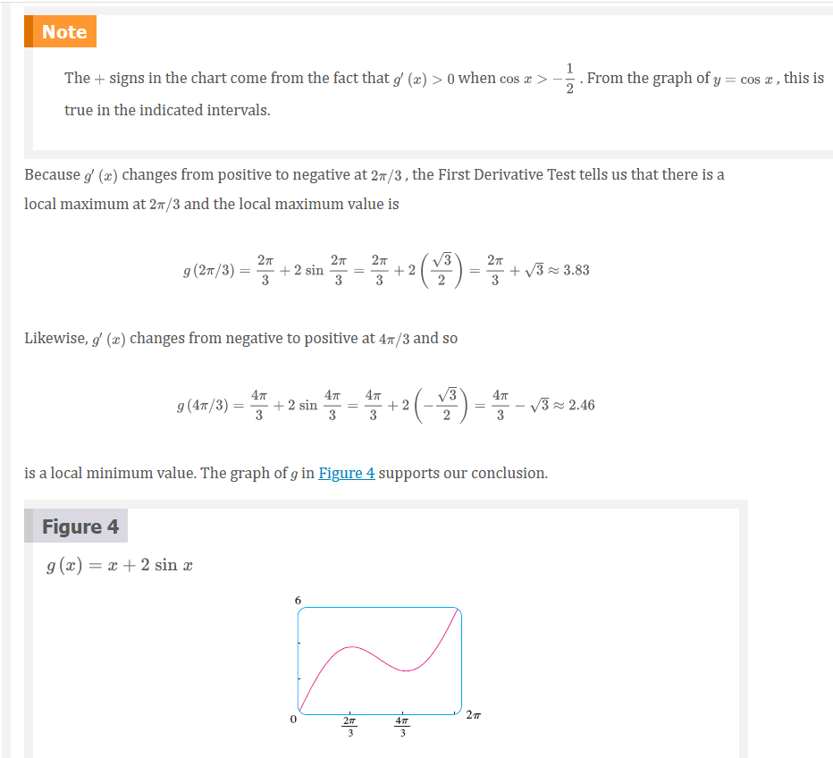

Chapter 4.3: How Derivatives Affect the Shape of the Graph
Many of the applications of calculus depend on our ability to deduce facts about a function \(f\) from information concerning its derivatives. Because \(f^{\prime}(x)\) represents the slope of the curve \(y = f(x)\) at the point \((x, f(x))\), it tells us the direction in which the curve proceeds at each point. So it is reasonable to expect that information about \(f^{\prime}(x)\) will provide us with information about \(f(x)\).
What Does \(f^{\prime}\) Say about \(f\)?
To see how the derivative of \(f\) can tell us where a function is increasing or decreasing, look at Figure 1. (Increasing functions and decreasing functions were defined in Section 1.1.) Between \(A\) and \(B\) and between \(C\) and \(D\), the tangent lines have positive slope and so \(f^{\prime}(x)\). Between \(B\) and \(C\), the tangent lines have negative slope and so \(f^{\prime}(x) < 0\). Thus it appears that \(f\) increases when \(f^{\prime}(x)\) is positive and decreases when \(f^{\prime}(x)\) is negative. To prove that this is always the case, we use the Mean Value Theorem.

Increasing/Decreasing Test
If \(f^{\prime}(x) > 0\) on an interval, then \(f\) is increasing on that interval.
If \(f^{\prime}(x) < 0\)on an interval, then \(f\) is decreasing on that interval.
NOTE: Let’s abbreviate the name of this test to the I/D Test.


Local Extreme Values
Recall from Section 4.1 that if \(f\) has a local maximum or minimum at \(c\), \(c\) then must be a critical number of \(f\) (by Fermat’s Theorem), but not every critical number gives rise to a maximum or a minimum. We therefore need a test that will tell us whether or not \(f\) has a local maximum or minimum at a critical number.
You can see from Figure 2 that \(f(0) = 5\) is a local maximum value of \(f\) because \(f\) increases on \((-1, 0)\) and decreases on \((0, 2)\). Or, in terms of derivatives, \(f^{\prime}(x) > 0\) for \(-1 < x < 0\) and \(f^{\prime}(x) < 0\) for \(0 < x < 2\). In other words, the sign of \(f^{\prime}(x)\) changes from positive to negative at \(0\). This observation is the basis of the following test.
The First Derivative Test
Suppose that \(c\) is a critical number of a continuous function \(f\).
If \(f^{\prime}\) changes from positive to negative at \(c\), then \(f\) has a local maximum at \(c\).
If \(f^{\prime}\) changes from negative to positive at \(c\), then \(f\) has a local minimum at \(c\).
If \(f^{\prime}\) is positive to the left and right of \(c\), or negative to the left and right of \(c\), then \(f\) has no local maximum or minimum at \(c\).
The First Derivative Test is a consequence of the I/D Test. In part (a), for instance, since the sign of \(f^{\prime}(x)\) changes from positive to negative at \(c\), \(f\) is increasing to the left of \(c\) and decreasing to the right of \(c\). It follows that \(f\) has a local maximum at \(c\).
It is easy to remember the First Derivative Test by visualizing diagrams such as those in Figure 3.
 

What Does \(f^{\prime \prime}\) Say about \(f\)?
Figure 5 shows the graphs of two increasing functions on \((a, b)\). Both graphs join point \(A\) to point \(B\) but they look different because they bend in different directions. How can we distinguish between these two types of behavior?

In Figure 6 tangents to these curves have been drawn at several points. In (a) the curve lies above the tangents and \(f\) is called concave upward on \((a, b)\). In (b) the curve lies below the tangents and \(g\) is called concave downward on \((a, b)\).

Concave Upward and Downward Definition
If the graph of \(f\) lies above all of its tangents on an interval \(I\), then it is called concave upward on \(I\). If the graph of \(f\) lies below all of its tangents on \(I\), it is called concave downward on \(I\).
Figure 7 shows the graph of a function that is concave upward (abbreviated CU) on the intervals \((b, c)\), \((d, e)\), and \((e, p)\) and concave downward (CD) on the intervals \((a, b)\), \((c, d)\), and \((p, q)\).

Concavity Test
If \(f^{\prime \prime}\) for all \(x\) in \(I\), then the graph of \(f\) is concave upward on \(I\).
If \(f^{\prime \prime}\) for all \(x\) in \(I\), then the graph of \(f\) is concave downward on \(I\).
Inflection Point Definition
A point \(P\) on a curve \(y = f(x)\) is called an inflection point if \(f\) is continuous there and the curve changes from concave upward to concave downward or from concave downward to concave upward at \(P\).

The Second Derivative Test
Suppose \(f^{\prime \prime}\) is continuous near \(c\).
If \(f^{\prime}(c) = 0\) and \(f^{\prime \prime}(c) > 0\), then \(f\) has a local minimum at \(c\).
If \(f^{\prime}(c) = 0\) and \(f^{\prime \prime}(c) < 0\), then \(f\) has a local maximum at \(c\).


Video Lectures
- 📺 Finding decreasing interval given the function
- 📺 Finding increasing interval given the derivative
- 📄 Increasing & decreasing intervals review
- 📺 Increasing and Decreasing Functions - Calculus
- 📺 Concavity introduction
- 📺 Analyzing concavity (graphical)
- 📺 Inflection points introduction
- 📺 Inflection points (graphical)
- 📺 Analyzing concavity (algebraic)
- 📺 Inflection points (algebraic)
- 📺 Mistakes when finding inflection points: second derivative undefined
- 📺 Mistakes when finding inflection points: not checking candidates
- 📄 Concavity review
- 📄 Inflection points review
- 📺 Second derivative test
Resources
- 📺 Finding decreasing interval given the function
- 📺 Finding increasing interval given the derivative
- 📄 Increasing & decreasing intervals review
- 📺 Increasing and Decreasing Functions - Calculus
- 📺 Concavity introduction
- 📺 Analyzing concavity (graphical)
- 📺 Inflection points introduction
- 📺 Inflection points (graphical)
- 📺 Analyzing concavity (algebraic)
- 📺 Inflection points (algebraic)
- 📺 Mistakes when finding inflection points: second derivative undefined
- 📺 Mistakes when finding inflection points: not checking candidates
- 📄 Concavity review
- 📄 Inflection points review
- 📺 Second derivative test
Textbook